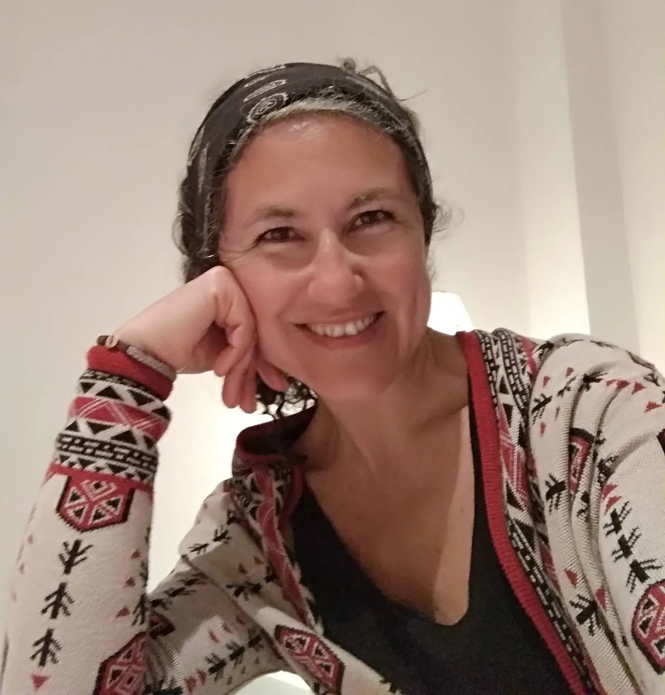

Sou portuguesa, nascida em Lisboa em 1973, casada, filha e mãe.
Por natureza, sou uma pessoa bem-disposta, tranquila, flexível, bastante empática e adoro conhecer pessoas e as suas dinâmicas internas. É-me intrínseco interessar-me e entregar-me verdadeiramente às pessoas e ao que pretendem partilhar, sem julgamento, com tempo para escutar.
Poder fazer parte de um processo de transformação pessoal e assistir ativamente à mudança de quem me procura é profundamente gratificante. Ser psicoterapeuta é muito mais do que uma profissão, é uma manifestação do meu ser. Sinto-me profundamente grata por isso.
A par da psicoterapia, também lecionei ballet clássico a crianças — uma realização da paixão pela dança que me acompanha desde sempre.

Sou Mestre em Psicologia (Área de Psicologia Clínica e Aconselhamento). Realizei pós-graduação em Consulta Psicológica e Psicoterapia, especializo-me em Psicogerontologia e Psicogeriatra, frequentei ainda pós-graduação em Neuropsicologia.
Ao longo de mais de 25 anos de prática clínica tenho ajudado pessoas nos mais variados contextos, lidando com situações de grande sofrimento psicológico.
Atendo adolescentes, adultos e adultos mais velhos em consultório, em Mafra e na Ericeira, e — através de consultas online — pessoas em todo o país e por toda a Europa.
Trabalho com base no modelo relacional dialógico desenvolvido por Maria Rita Mendes Leal *, que valoriza a relação terapêutica como instrumento de mudança.
Sou também licenciada em Dança (Ramo de Educação), uma paixão que me acompanha desde a infância.
* O modelo relacional dialógico valoriza a relação terapêutica como centro de mudança. Esta abordagem, desenvolvida por Maria Rita Mendes Leal, considera que o vínculo entre terapeuta e cliente constitui um factor terapêutico fundamental — não apenas o contexto em que o trabalho acontece, mas o próprio instrumento da mudança. Pressupõe um encontro entre duas pessoas num espaço de genuína disponibilidade e receptividade que possibilita novas formas de ser e de se relacionar.
Entre em contacto. Responderei o mais brevemente possível.
Entrar em contacto